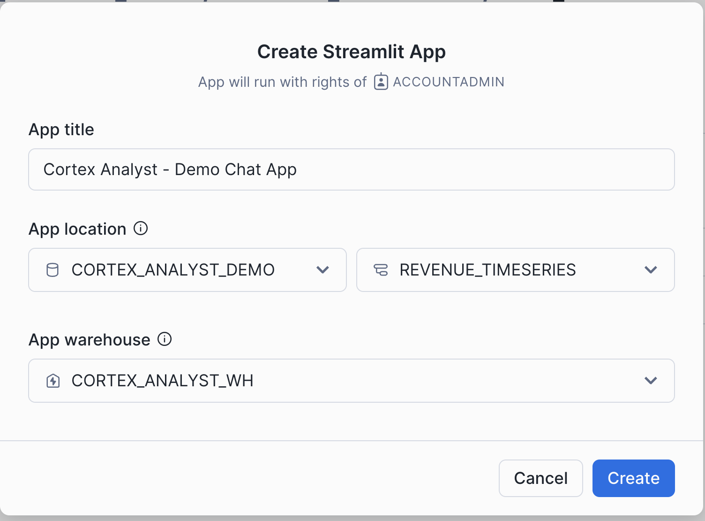

Through this quickstart guide, you will explore how to get started with Cortex Analyst, which is a fully managed service in Snowflake that provides a conversational interface to interact with structured data in Snowflake.
What is Cortex Analyst?
Cortex Analyst is fully managed service in Cortex AI that provides a conversational interface to interact with structured data in Snowflake. It streamlines the development of intuitive, self-service analytics applications for business users, while providing industry-leading accuracy. To deliver high text-to-SQL accuracy, Cortex Analyst uses an agentic AI setup powered by state-of-the-art LLMs. Available as a convenient REST API, Cortex Analyst can seamlessly integrate into any application. This empowers developers to customize how and where business users interact with results, while still benefiting from Snowflake's integrated security and governance features, including role-based access controls (RBAC), to protect valuable data.

Why use Cortex Analyst?
Historically, business users have primarily relied on BI dashboards and reports to answer their data questions. However, these resources often lack the flexibility needed, leaving users dependent on overburdened data analysts for updates or answers, which can take days. Cortex Analyst disrupts this cycle by providing a natural language interface with high text-to-SQL accuracy. With Cortex Analyst organizations can streamline the development of intuitive, conversational applications that can enable business users to ask questions using natural language and receive more accurate answers in near real time
This quickstart will focus on getting started with Cortex Analyst, teaching the mechanics of how to interact with the Cortex Analyst service and how to define the Semantic Model definitions that enhance the precision of results from this conversational interface over your Snowflake data.
What you will learn
- How to construct and configure a Semantic Model for your data
- How to call the Cortex Analyst REST API to use your Semantic Model to enable natural-language question-asking on top of your structured data in Snowflake via Streamlit in Snowflake (SiS) application
Prerequisites
- Git installed
- (Optional) Python >= 3.9, <= 3.11 installed to run the OSS Semantic Model Generator
- A Snowflake account in supported cloud regions. And a login with a role that has the ability to create database, schema, tables, stages, user-defined functions, and stored procedures. If not, you will need to register for a free trial account from any of the supported cloud regions or use a different role.
What You'll Build
- A Semantic Model over sample financial data
- A Streamlit in Snowflake (SiS) app with a conversational interface to Cortex Analyst

Run the following SQL commands in a SQL worksheet to create the database, schema, warehouse, and stage.
USE ROLE sysadmin;
CREATE OR REPLACE DATABASE cortex_analyst_demo;
CREATE OR REPLACE SCHEMA revenue_timeseries;
CREATE OR REPLACE WAREHOUSE cortex_analyst_wh
WAREHOUSE_SIZE = 'large'
WAREHOUSE_TYPE = 'standard'
AUTO_SUSPEND = 60
AUTO_RESUME = TRUE
INITIALLY_SUSPENDED = TRUE
COMMENT = 'warehouse for cortex analyst demo';
CREATE STAGE raw_data DIRECTORY = (ENABLE = TRUE);
Run the following SQL commands in a SQL worksheet to create the the tables.
USE cortex_analyst_demo.revenue_timeseries;
USE warehouse cortex_analyst_wh;
CREATE OR REPLACE TABLE CORTEX_ANALYST_DEMO.REVENUE_TIMESERIES.DAILY_REVENUE (
DATE DATE,
REVENUE FLOAT,
COGS FLOAT,
FORECASTED_REVENUE FLOAT
);
CREATE OR REPLACE TABLE CORTEX_ANALYST_DEMO.REVENUE_TIMESERIES.DAILY_REVENUE_BY_PRODUCT (
DATE DATE,
PRODUCT_LINE VARCHAR(16777216),
REVENUE FLOAT,
COGS FLOAT,
FORECASTED_REVENUE FLOAT
);
CREATE OR REPLACE TABLE CORTEX_ANALYST_DEMO.REVENUE_TIMESERIES.DAILY_REVENUE_BY_REGION (
DATE DATE,
SALES_REGION VARCHAR(16777216),
REVENUE FLOAT,
COGS FLOAT,
FORECASTED_REVENUE FLOAT
);
There are three data files and one YAML file included in the repo that you should have cloned:
- daily_revenue_combined.csv
- daily_revenue_by_region_combined.csv
- daily_revenue_by_product_combined.csv
- revenue_timeseries.yaml
You will now upload these files to your Snowflake account and ingest the data files into the tables created in the previous step.
To upload the data files:
- Navigate to the Worksheets tab in Snowsight, click the ‘+' button in the top right corner and select Add Data
- On the Add Data page, select Load files into a stage
- Select the four files that you want to upload (listed above)
- Select CORTEX_ANALYST_DEMO as Database, REVENUE_TIMESERIES as Schema, and RAW_DATA as Stage
- Click Upload
Let's go check that the files were successfully uploaded to the stage. In the Snowsight UI:
- Select Data » Databases
- Select the CORTEX_ANALYST_DEMO database and REVENUE_TIMESERIES Schema that contain the stage
- Select Stages and select the RAW_DATA stage
- If prompted, select Enable Directory Table and the CORTEX_ANALYST_WH to refresh the directory table
You should see the four files listed in the stage: 
Now, let's load the raw CSV data into the tables. Go back to your Snowflake SQL worksheet and run the following load_data.sql code to load data into the tables:
COPY INTO CORTEX_ANALYST_DEMO.REVENUE_TIMESERIES.DAILY_REVENUE
FROM @raw_data
FILES = ('daily_revenue_combined.csv')
FILE_FORMAT = (
TYPE=CSV,
SKIP_HEADER=1,
FIELD_DELIMITER=',',
TRIM_SPACE=FALSE,
FIELD_OPTIONALLY_ENCLOSED_BY=NONE,
REPLACE_INVALID_CHARACTERS=TRUE,
DATE_FORMAT=AUTO,
TIME_FORMAT=AUTO,
TIMESTAMP_FORMAT=AUTO
EMPTY_FIELD_AS_NULL = FALSE
error_on_column_count_mismatch=false
)
ON_ERROR=CONTINUE
FORCE = TRUE;
COPY INTO CORTEX_ANALYST_DEMO.REVENUE_TIMESERIES.DAILY_REVENUE_BY_PRODUCT
FROM @raw_data
FILES = ('daily_revenue_by_product_combined.csv')
FILE_FORMAT = (
TYPE=CSV,
SKIP_HEADER=1,
FIELD_DELIMITER=',',
TRIM_SPACE=FALSE,
FIELD_OPTIONALLY_ENCLOSED_BY=NONE,
REPLACE_INVALID_CHARACTERS=TRUE,
DATE_FORMAT=AUTO,
TIME_FORMAT=AUTO,
TIMESTAMP_FORMAT=AUTO
EMPTY_FIELD_AS_NULL = FALSE
error_on_column_count_mismatch=false
)
ON_ERROR=CONTINUE
FORCE = TRUE ;
COPY INTO CORTEX_ANALYST_DEMO.REVENUE_TIMESERIES.DAILY_REVENUE_BY_REGION
FROM @raw_data
FILES = ('daily_revenue_by_region_combined.csv')
FILE_FORMAT = (
TYPE=CSV,
SKIP_HEADER=1,
FIELD_DELIMITER=',',
TRIM_SPACE=FALSE,
FIELD_OPTIONALLY_ENCLOSED_BY=NONE,
REPLACE_INVALID_CHARACTERS=TRUE,
DATE_FORMAT=AUTO,
TIME_FORMAT=AUTO,
TIMESTAMP_FORMAT=AUTO
EMPTY_FIELD_AS_NULL = FALSE
error_on_column_count_mismatch=false
)
ON_ERROR=CONTINUE
FORCE = TRUE;
Now, you will create a demo chat application to call the Cortex Analyst API and ask natural-language questions over our structured revenue datasets. To create the Streamlit in Snowflake application:
- Go to the Streamlit page in Snowsight, and click
+ Streamlit App, and fill it in with the below details and click create:  - Open up the cortex_analyst_sis_demo_app.py file in your preferred local code editor
- Copy and paste the SiS app code into the Streamlit editor

- Click
Runand begin asking questions!
Take note of the send_message function that is defined in this Python code. This is the function that takes our chat input prompt, packages it up as a JSON object, and sends it to the Cortex Analyst API (with the specified revenue_timeseries.yaml Semantic Model).
def send_message(prompt: str) -> Dict[str, Any]:
"""Calls the REST API and returns the response."""
request_body = {
"messages": [{"role": "user", "content": [{"type": "text", "text": prompt}]}],
"semantic_model_file": f"@{DATABASE}.{SCHEMA}.{STAGE}/{FILE}",
}
resp = requests.post(
url=f"https://{HOST}/api/v2/cortex/analyst/message",
json=request_body,
headers={
"Authorization": f'Snowflake Token="{st.session_state.CONN.rest.token}"',
"Content-Type": "application/json",
},
)
request_id = resp.headers.get("X-Snowflake-Request-Id")
if resp.status_code < 400:
return {**resp.json(), "request_id": request_id} # type: ignore[arg-type]
else:
raise Exception(
f"Failed request (id: {request_id}) with status {resp.status_code}: {resp.text}"
)
You can now begin asking natural language questions about the revenue data in the chat interface (e.g. "What questions can I ask?")
[Optional reading]
The semantic model file revenue_timeseries.yaml is the key that unlocks Cortex Analyst's power. This YAML file dictates the tables, columns, etc. that Analyst can use in order to run queries that answer natural-language questions Let's talk a little about the details of this file:
The Semantic Model is composed of a number of different fields that help Cortex Analyst understand the specifics of your data:
- Logical Tables which are composed of Logical Columns
- Logical Columns which are one of
dimensions,time_dimensions, ormeasures
Logical Tables are relatively straightforward- these are tables or views within a database. That's it! Pretty simple
Logical Columns get a bit more complicated; a logical column can reference an underlying physical column in a table, or it can be a expression containing one or more physical columns. So, for example, in the revenue_timeseries.yaml, we have a simple logical column daily_revenue that is a physical column. In the daily_revenue measure definition, you'll notice that we provide a description, as well as synonyms, data_type, and a default_aggregation, but no expr parameter. This is because revenue is simply a physical column in the daily_revenue table:
measures:
- name: daily_revenue
expr: revenue
description: total revenue for the given day
synonyms: ["sales", "income"]
default_aggregation: sum
data_type: number
In contrast, we define a different measure daily_profit which is not in fact a physical column, but rather an expression of the difference between the revenue and cogs physical columns:
- name: daily_profit
description: profit is the difference between revenue and expenses.
expr: revenue - cogs
data_type: number
In the semantic model, time_dimensions specifically capture temporal features of the data, and dimensions are not quantitative fields (e.g. quantitative fields are measures, while categorical fields are dimensions).
An example time_dimension:
time_dimensions:
- name: date
expr: date
description: date with measures of revenue, COGS, and forecasted revenue for each product line
unique: false
data_type: date
An example dimension:
dimensions:
- name: product_line
expr: product_line
description: product line associated with it's own slice of revenue
unique: false
data_type: varchar
sample_values:
- Electronics
- Clothing
- Home Appliances
- Toys
- Books
For more information about the semantic model, please refer to the documentation.
[Optional reading]
In addition to the previously discussed Semantic Model information, the Cortex Analyst Verified Query Repository (VQR) can help improve accuracy and trustworthiness of results by providing a collection of questions and corresponding SQL queries to answer them. Cortex Analyst will then use these verified queries when answering similar types of questions in the future.
Adding Verified Queries
Verified queries ultimately are specified in the verified_queries section of the semantic model, e.g.:
verified_queries:
- name: "California profit"
question: "What was the profit from California last month?"
verified_at: 1714497970
verified_by: Jane Doe
sql: "
SELECT sum(profit)
FROM __sales_data
WHERE state = 'CA'
AND sale_timestamp >= DATE_TRUNC('month', DATEADD('month', -1, CURRENT_DATE))
AND sale_timestamp < DATE_TRUNC('month', CURRENT_DATE)
"
Optional
While verified queries can be added directly to the Semantic Model, Snowflake also provides an OSS Streamlit application to help add verified queries to your model.

To install and use this app:
- Clone the semantic-model-generator repository. Follow the setup instructions in the repo's README to provide your credentials. Then follow the instructions in the admin_app README to install dependencies and start the app.
- Once the app is running, enter the database, schema, and stage location of your semantic model YAML file in the empty fields. The YAML appears in an interactive editor on the left side of the window.
- On the right side of the window, ask a question in the chat interface to generate a SQL query.
- Inspect the generated query and the results it produces. If it worked as you expected, select the Save as verified query button below the assistant answer to add the query to your semantic model.
- If generated query is incorrect, select the Edit button and modify the query, then run the modified query and see if it produces the intended results. Continue modifying and testing the query until it works the way you want it to. Finally, select Save as verified query to save the query to your semantic model.
- Select the Save button in the bottom left of the window to update the semantic model, then go back to step 2 if you want to add more queries.
- When you're satisfied with the queries you've added, select the Upload button and enter a file name for your new YAML file, then select Submit Upload.
Modify your SiS application code to point at the new Semantic Model YAML file location, and use Cortex Analyst as before!
Congratulations, you have successfully completed this quickstart! Through this quickstart, we were able to showcase how Cortex Analyst allows business users to ask natural-language questions over their structured data to perform analysis and receive trusted answers to business questions.
What you learned
- How to create a semantic model YAML file
- How to interact with the Cortex Analyst REST API via a Streamlit in Snowflake (SiS) chat interface
For more information, check out the resources below: